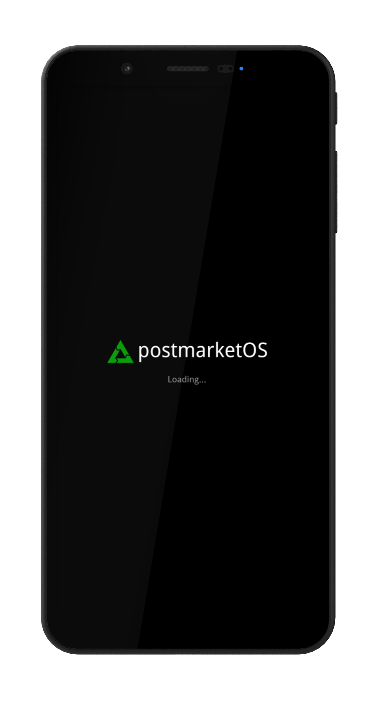

SHIFT SHIFT6mq (shift-axolotl)
|
 SHIFT SHIFT6mq (axolotl) | |
| Manufacturer | SHIFT |
|---|---|
| Name | SHIFT6mq |
| Codename | shift-axolotl |
| Released | 2020 |
| Category | community |
| Original software | Android 10.0 |
| postmarketOS kernel | Mainline |
| Hardware | |
| Chipset | Qualcomm Snapdragon 845 (SDM845) |
| CPU | Octa-core (4x 2.8 GHz Kryo 385 Gold & 4x 1.7 GHz Kryo 385 Silver) |
| GPU | Adreno 630 |
| Display | 1080 x 2160 AMOLED |
| Storage | 128 GB UFS 2.1 |
| Memory | 8 GB |
| Architecture | aarch64 |
| Type | handset |
{kind=link}
| USB Networking |
Works
|
|---|---|
| Flashing |
Works
|
| Touchscreen |
Works
|
| Display |
Works
|
| WiFi |
Works
|
| FDE |
Works
|
| Mainline |
Works
|
| Battery |
Works
|
| 3D Acceleration |
Works
|
| Audio |
Works
|
| Bluetooth |
Works
|
| Camera |
Broken
|
| GPS |
Broken
|
| Mobile data |
Works
|
| SMS |
Works
|
| Calls |
Works
|
| USB OTG |
Broken
|
| NFC |
Broken
|
| Accelerometer |
Broken
|
|---|---|
| Magnetometer | |
| Ambient Light | |
| Proximity | |
| Hall Effect | |
| Barometer | |
| Power Sensor | |
| Camera Flash | |
|---|---|
| Keyboard | |
| Touchpad | |
| USB-A | |
| HDMI/DP | |
| Ir TX |
Unavailable
|
| Ir RX | |
| Stylus | |
| Haptics | |
| Ethernet | |
| FOSS bootloader | |
Contents
Contributors
Users owning this device
Boot modes
By holding various button combinations while booting the device can be made to boot into different modes.
Unplug from USB, power off the device and press and hold the below buttons to enter the specific boot mode.
| Boot mode | Power | Up | Down |
|---|---|---|---|
| Fastboot | Y | Y | N |
| Recovery | Y | N | Y |
| EDL | Y | Y | Y |
Bootloader
The bootloader (ABL) is supported by Fwupd and can be upgraded.
Unlock bootloader
To unlock the bootloader, you need to allow unlocking it via enabling OEM unlocking within Android.
- Go to Settings within Android and select
About - Tap on
Build numberseven times to enable developer options - Go back and select
System,Advancedand scroll down toDeveloper options - Enable
Advanced restartandOEM unlocking - Reboot into bootloader by long pressing the power button, selecting
RestartandBootloader
After it has successfully rebooted into Fastboot mode, initiate unlocking the bootloader using fastboot:
$ fastboot flashing unlock
Please follow the prompts on the screen to finish unlocking the bootloader.
| WARNING: This will erase your data, please back up important data before unlocking the bootloader. |
Customization
Custom AVB key
| This is not fully relevant for postmarketOS, as AVB is currently unsupported, but documented for the future. |
The bootloader has support for setting an user provided AVB key to allow relocking the bootloader if an OS with proper support is flashed.
This is realized with exposing a virtual partition avb_custom_key where the custom user key can be flashed to:
$ fastboot flash avb_custom_key avb_key.bin
For more information please refer to the commit FastbootCmds: oem device-info: check if user public key is set.
Developer mode
| Toggling developer mode requires the bootloader to be unlocked. |
Supported since version 3.9.20221006 and enabling it has the following effects:
- Ignore slot retry counter
- Disables marking slots as unbootable
- Switch active slots within the bootloader GUI
To enable developer mode:
$ fastboot oem enable-developer-mode
To disable developer mode:
$ fastboot oem disable-developer-mode
To check the current status of developer mode:
$ fastboot oem device-info
(bootloader) Developer mode enabled: true/false
Mainline optimization
Bootloaders since version 3.9.20221006 support additional fastboot oem commands to enable certain Quality of Life improvements when running mainline.
To enable mainline optimization:
$ fastboot oem enable-mainline-optimization
To disable mainline optimization:
$ fastboot oem disable-mainline-optimization
To check the current status of mainline support:
$ fastboot oem device-info
(bootloader) Mainline optimization enabled: true/false
Fastbootd
Fastbootd is a userspace implementation of Fastboot. For axolotl it is located within the recovery.
To access it, you can boot the recovery and select a menu option to enter fastbootd mode. Optionally you can also enter it via ADB and Fastboot:
$ # Enter fastbootd via adb
$ adb reboot fastboot
$ # Enter fastbootd via fastboot
$ fastboot reboot fastboot
You can only access dynamic partitions within fastbootd.
| As fastbootd lives within the recovery, you need a valid recovery image installed in the currently active slot to access it. |
Installation
Follow the pmbootstrap instructions to build your own image, using shift as the vendor and axolotl as the codename but stop before following flashing instructions, as these are different for axolotl.
There are currently different ways to install postmarketOS (only select one).
UBports Installer
You can use UBports Installer to flash a prebuilt image of postmarketOS onto your Shift6mq. Just select postmarketOS in the OS selection and choose the desired UI and lean back!
Manual installation on userdata partition
Installation on userdata is the most generic and universally supported way, however it does not allow for dual boot or utilizing the full flash storage of the device.
Reboot into Fastboot mode and install postmarketOS:
$ # Flash rootfs to userdata partition
$ pmbootstrap flasher flash_rootfs --partition userdata
$ # Flash kernel to boot
$ pmbootstrap flasher flash_kernel
$ # Erase dtbo partition, as it conflicts with our mainline kernel
$ # Note: this operation takes some time to complete
$ fastboot erase dtbo
$ # Reboot into postmarketOS
$ fastboot reboot
fastboot can sometimes misbehave, if any of the fastboot commands fail you should run fastboot reboot bootloader (or reboot manually using the interface on the device) and then repeat the failed command. |
Manual installation on super partition
| WARNING: This is currently work in progress and actively worked on. |
First select a slot (a or b) you want to install postmarketOS on.
This guide assumes you want to install onto the a slot. Replace a with b depending on the slot you want to install on. |
To install on super partition, a valid recovery with proper fastbootd implementation needs to be installed into the slot, which you want to install postmarketOS on.
You can download the stock recovery image, provided by the manufacturer and install it within Fastboot mode:
You can select the slot to install on via appending _SLOT to the partition name (for example boot_a, boot_b, ...). |
$ # Install recovery in "a" slot
$ fastboot flash recovery_a recovery_stock.img
Enter Fastbootd and ensure it is working as expected:
$ # Set "a" as active slot and reboot to fastbootd
$ fastboot --set-active=a
$ fastboot reboot fastboot
$ # Verify current slot is "a"
$ fastboot getvar current-slot
After you verified fastbootd works in the slot you have selected, you can install postmarketOS:
$ # Flash rootfs to system_a partition
$ pmbootstrap flasher flash_rootfs --partition system_a
$ # Flash kernel to boot
$ pmbootstrap flasher flash_kernel --partition boot_a
$ # Reboot to bootloader, as erasing dtbo is not working in fastbootd
$ fastboot reboot bootloader
$ # Erase dtbo_a partition, as it conflicts with our mainline kernel
$ # Note: this operation takes some time to complete
$ fastboot erase dtbo_a
$ # Reboot into postmarketOS
$ fastboot reboot
The phone will now always boot into postmarketOS until you switch slots with fastboot again:
$ fastboot --set-active=b
If you are unable to boot into your former OS after installing postmarketOS and then switching back to the previous slot, you may have to re-flash the image (e.g. from here) by booting to recovery and sideloading via adb. Keep in mind that you must have slot a active to flash the image to slot b. |
Partition map
1|axolotl:/ # blkid /dev/block/zram0: UUID="663a3d49-89cc-4d71-8c4c-9ad121939171" TYPE="swap" /dev/block/sda2: UUID="e31914f5-d01b-4e08-97bd-d8e0f406764d" TYPE="ext4" /dev/block/sda8: UUID="91f68f2a-3821-47bf-8d9d-7d705b2d5ab0" TYPE="ext4" /dev/block/sda9: UUID="d5b3f5fa-dbd4-4cc5-9b9d-8550ad9c74a7" TYPE="f2fs" /dev/block/sde4: SEC_TYPE="msdos" UUID="00BC-614E" TYPE="vfat" /dev/block/sde5: SEC_TYPE="msdos" UUID="00BC-614E" TYPE="vfat" /dev/block/sde9: LABEL="dsp" UUID="af32c008-2a39-7e5b-a5dc-201456d93103" TYPE="ext4" /dev/block/sde26: SEC_TYPE="msdos" UUID="00BC-614E" TYPE="vfat" /dev/block/sde27: SEC_TYPE="msdos" UUID="00BC-614E" TYPE="vfat" /dev/block/sde31: LABEL="dsp" UUID="af32c008-2a39-7e5b-a5dc-201456d93103" TYPE="ext4" /dev/block/sde54: SEC_TYPE="msdos" LABEL="LOGFS" UUID="D273-55EA" TYPE="vfat"
axolotl:/ # df -h Filesystem Size Used Avail Use% Mounted on tmpfs 3.7G 1.5M 3.7G 1% /dev tmpfs 3.7G 0 3.7G 0% /mnt /dev/block/sda8 11M 160K 11M 2% /metadata /dev/block/dm-1 1.2G 849M 476M 65% / /dev/block/dm-2 971M 489M 482M 51% /system_ext /dev/block/dm-0 1.8G 378M 1.4G 21% /product /dev/block/dm-3 732M 482M 250M 66% /vendor tmpfs 3.7G 8.0K 3.7G 1% /apex tmpfs 3.7G 524K 3.7G 1% /linkerconfig /dev/block/sda2 27M 0.9M 26M 4% /mnt/vendor/persist /dev/block/sde5 64M 704K 63M 2% /vendor/bt_firmware /dev/block/sde4 120M 115M 5.0M 96% /vendor/firmware_mnt /dev/block/sde9 27M 24M 3.1M 89% /vendor/dsp /dev/block/dm-8 101G 1.7G 100G 2% /data tmpfs 3.7G 0 3.7G 0% /data_mirror /data/media 101G 1.7G 100G 2% /mnt/runtime/default/emulated /dev/fuse 101G 1.7G 100G 2% /mnt/user/0/emulated
UART
Requirements
- SHIFT6mq
- Screwdriver that came with your SHIFT6mq
- Alternatively any T4 Torx screwdriver should be suitable
- Wires to connect test points
- UART-TTL USB Adapter (I have used this one)
Optionally
Depending on whether you want to permanently have wires attached to your 6mq (which makes it less suitable as an actually usable phone) or just a temporary connection, you need:
- Soldering iron
- And a steady hand!
- Something to temporary hold the wires in place during your UART usage
Removing the case
First of all, properly shutdown your 6mq in case it is powered on!
Next remove the backcover, remove the battery and unscrew all 14 screws securing the housing of the 6mq.
Gently insert your fingernail (or any tool for this purpose) between display and the device frame to loosen their connection and remove the display.
You can also follow this iFixit guide until Step 5.
{kind=link}
Removing the top PCB
Remove the connector (responsible for the POWER and VOLUME buttons) on the right side at the top PCB to expose another screw.
Then remove all 3 screws as shown in the picture.
{kind=link}
Afterwards gently remove the top PCB.
{kind=link}
After you have removed the top PCB, the test points we need are still covered by the SIM card tray.
Remove SIM card tray from top PCB
| Upload of video gently prying off the SIM card tray is pending. |
Explanation of test points
After removing the SIM card tray, the test points we need for UART are exposed.
{kind=link}
These are the test points together with the color of the wire used in this guide:
- TH - Thermal test point -> blue
- 1.8 (left) -> green
- 1.8 (right) -> yellow
- You can connect these two points while booting up to force boot into EDL mode
- Especially useful if you ever brick the bootloader, as it allows you to unbrick your device using QFIL
- T - Transmit -> orange
- R - Receive -> red
- G - Ground -> brown
{kind=link}
{kind=link}
T, R and G are required for UART.
Extras for permanent connections
If you want to keep using the device's housing when having UART wires soldered, you may need to extend the SIM card tray opening to guide the wires through. This is possible with soldering away the housing itself.
{kind=link}
When putting the device together, be sure to carefully connect the fingerprint reader connector, as this is a bit tricky to connect.
{kind=link}
Usage of UART
If you want to use UART for reading logs, connect as follows:
- T (orange) of the PCB to RXD of the USB adapter card
- G (brown) of the PCB to GND of the USB adapter card
Afterwards launch minicom (or any other program you prefer):
sudo minicom -D /dev/ttyUSB0
Camera
The state of the implementation of the camera is tracked on https://gitlab.com/sdm845-mainline/linux/-/issues/21
Troubleshooting
If your 4G connection only shortly appears and then falls back to 2G/3G, your EPS initial bearer might be wrong.
You can check if the EPS bearer is wrong if there's no initial bearer path in the output of mmcli -m any under the 3GPP category.
For Telenet (Belgium), you need to clear username, password and APN of the initial bearer. There's no UI for it, but you can with mmcli:
mmcli -m any --3gpp-set-initial-eps-bearer-settings="ip-type=ipv4,user='',password='',apn=''"
After that, disable and enable your modem in GNOME Settings.
See also
- pmaports!2703 Initial merge request
- pmaports!2738 Mainline bringup
- Device package
- Kernel package
- OEM bootloader (edk2) sources
- Sources for generating axolotl's fwupd packages